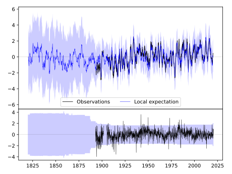
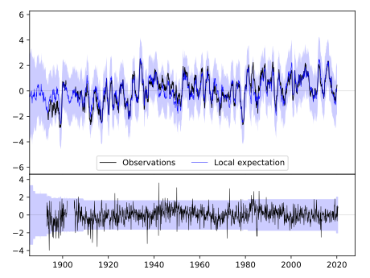
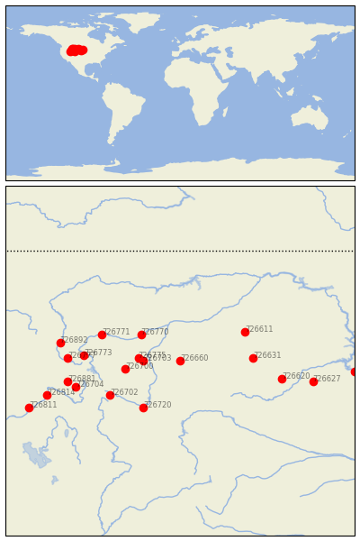

SHERIDAN, WYOMING [USA]


| Neighbour | Name | Country | Distance | Lon/Lat | Years |
|---|
| 726660 | SHERIDAN, WYOMING | USA | 0 | -107.0, 44.8 | 1893-2020 |
| 726703 | LOVELL | USA | 110 | -108.4, 44.8 | 1909-1980 |
| 726775 | DEAVER | USA | 126 | -108.6, 44.9 | 1916-1980 |
| 726770 | BILLINGS | USA | 161 | -108.5, 45.8 | 1909-2020 |
| 726700 | CODY | USA | 169 | -109.1, 44.5 | 1895-2019 |
| 726631 | COLONY | USA | 220 | -104.2, 44.9 | 1893-2019 |
| 726720 | RIVERTON | USA | 229 | -108.4, 43.0 | 1899-2019 |
| 726611 | EKALAKA | USA | 230 | -104.5, 45.9 | 1893-2019 |
| 726702 | DUBOIS | USA | 259 | -109.7, 43.5 | 1895-2019 |
| 726771 | BIG TIMBER | USA | 259 | -110.0, 45.8 | 1893-2019 |
| 726773 | YELLOWSTONE PK MAMMO | USA | 292 | -110.7, 45.0 | 1887-2019 |
| 726620 | RAPID CITY, SOUTH DA | USA | 319 | -103.1, 44.1 | 1888-2020 |
| 726704 | ALTA 1 NNW | USA | 337 | -111.0, 43.8 | 1897-2019 |
| 726777 | HEBGEN DAM | USA | 339 | -111.3, 44.9 | 1893-2019 |
| 726881 | ASHTON 1N | USA | 352 | -111.3, 44.0 | 1894-2019 |
| 726892 | NORRIS MADISON PH | USA | 368 | -111.6, 45.5 | 1893-2019 |
| 726627 | COTTONWOOD 2 E | USA | 414 | -101.9, 44.0 | 1893-2019 |
| 726814 | IDAHO FALLS | USA | 431 | -112.1, 43.5 | 1905-1980 |
| 726811 | ABERDEEN EXP STN | USA | 505 | -112.8, 43.0 | 1893-2019 |
| 726560 | PIERRE | USA | 532 | -100.3, 44.4 | 1891-2020 |